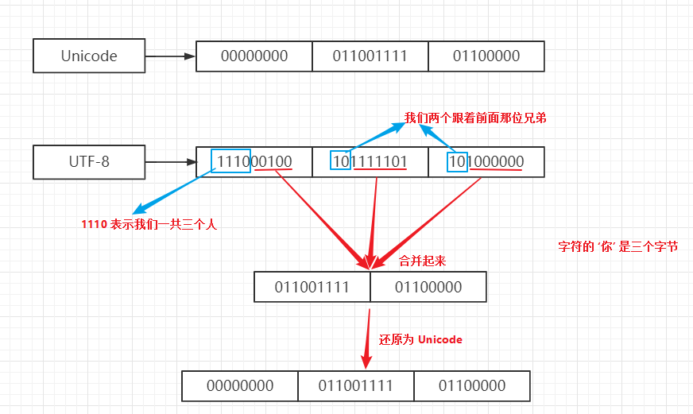

Unicode和UTF-8
数字与字符
数字在计算机中可以直接使用二进制表示，数字和数字之间直接进行运算（加减乘除等操作）。
字符虽然在计算机中也可以使用二进制表示，但字符的表示需要遵循着一套字符编码方案，比如 ASCII码 以及 Unicode码（应该称之为字符集）。
所以说，在计算机的世界中，数字是数字，字符是字符，也就是说 数字 6 和 字符 6， 虽然看起来一样，但其实它们属于两种东西，他们的功能不同，存储形式也不同。
数字 6
可以表示成 00000110
字符 6
用 ASCII 表示成 00110110，
用 Unicode 表示成 000000000000000000110110从上面的例子中可以很清楚的看到，数字 6 和 字符 6 是用两种不同的方式表示。更深一步可以发现 Unicode 字符集用三个字节来表示一个字符，这样看起来似乎有点浪费内存空间，所以为了解决问题，就发明了 UTF-8 这种编码方式。换句话说， UTF-8 编码 是 Unicode 字符集的另外一种实现方式。
Unicode
Unicode码也称为万国码，它的目标就是囊括世界上所有的字符，目前已经收入 13 万个字符，大于 16 位（二进制），所以目前至少需要 3 个字节来表示字符，以后还会继续扩充，最新版只添加了一个字：令和的合体字。
Unicode 是一个字符集，它规定了字符的二进制代码，但是它并没有强制规定这个二进制代码应该如何存储，所以也就衍生出 UTF-8、UTF-16、UTF-32 等多种编码方式。
UTF-8
得益于 UTF-8 的编码规则，目前被广泛的使用，它的特点就是变长，它能够用 1-n 个字节来表示一个符号，这样就能够节省存储空间。
UTF-8 的编码规则：
- 对于单字节的字符，字节的第一位 设为 0， 后七位为 Unicode 码，因此 UTF-8 编码 同样包含 ASCII码。
- 对于 n（n>2) 字节的字符， 第一个字节的 前 n 位设为 1， 第 n + 1 位设为 0 ，后面的字节前两位一律设为 10，其余部分按照顺序填入 Unicode码。
举个栗子：
存储 字符 'a'
'a' 对应的Unicode 编号 97：
用 Unicode 方式：00000000 00000000 01100001
用 UTF-8 方式： 01100001
存储 字符 '你'
'你' 对应的 Unicode 编号 4F60：
用 Unicode 方式：00000000 01001111 01100000
用 UTF-8 方式： 11100100 10111101 101000000
为啥这样设计呢？这样设计的灵感来自哪里？
其实灵感就来自于人类世界本身，举个通俗一点的例子。
有一个餐馆，一时间来了一些人，那餐馆的老板想知道他们哪些是一起的，哪些是自己一个人来的，很简单就是距离最近的（第一个）：你们是几个人。这个人只要回答： 我们是 n 个人，那么其余的人只要表示我们是跟他一起来的，就 ok 了。这样老板就能够顺利的安排座位。
参考链接
Unicode
UTF-8
字符编码笔记：ASCII，Unicode 和 UTF-8
Google广告
假装这里有广告